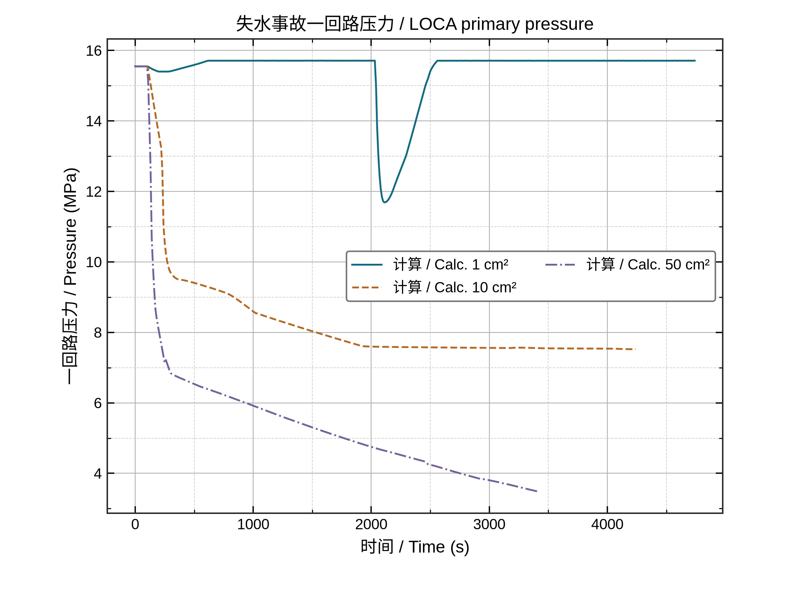
01 · line
失水事故一回路压力 / LOCA primary pressure
全量纯连线无点；多工况颜色＋线型；单位转换
14 张；line + point-line = 10/14 = 71.4%。PNG 为 183 × 136 mm、300 dpi。缩略图不代表印刷字号。
NPPAD 为 PCTRAN 模拟，不是实验；HWAT 为实验；IAPWS 仅作入口压力下饱和温度参照，不是壁温预测。径向采用 r/r_max,meas，不推断管径。

失水事故一回路压力 / LOCA primary pressure
全量纯连线无点；多工况颜色＋线型；单位转换
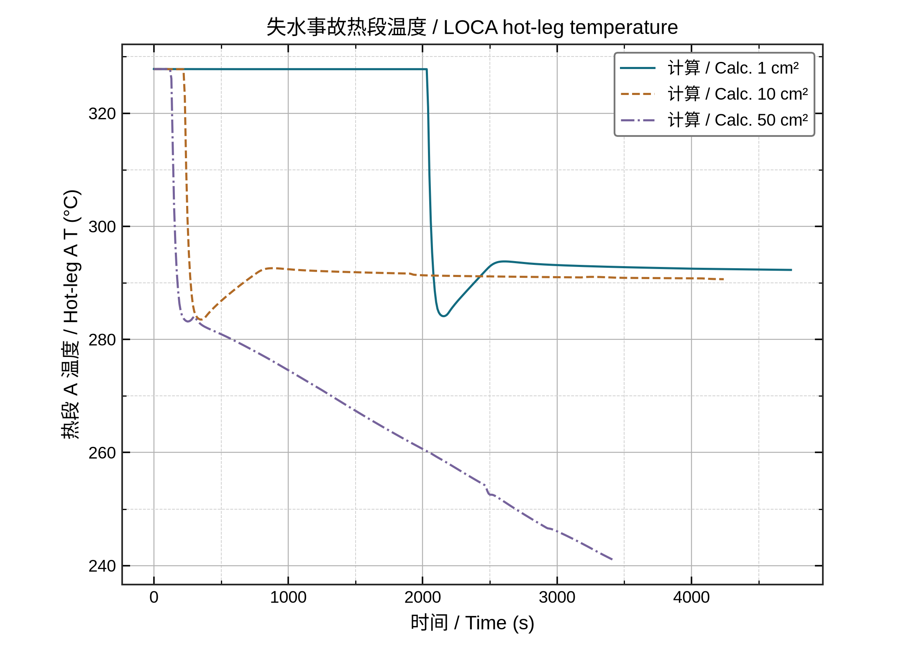
失水事故热段温度 / LOCA hot-leg temperature
纯 line 无标记；多工况原序连线
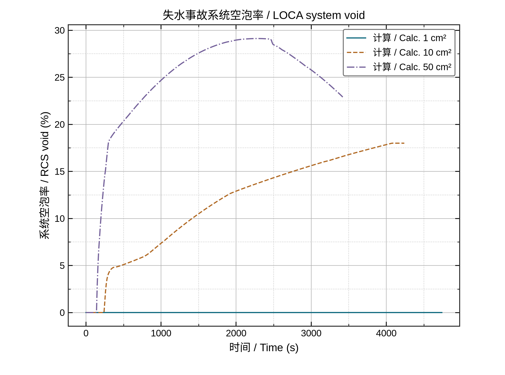
失水事故系统空泡率 / LOCA system void
纯 line 无标记；多工况原序连线
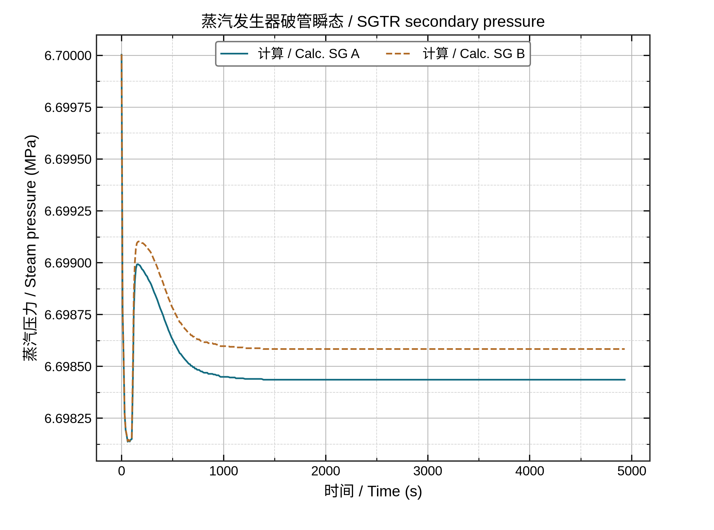
蒸汽发生器破管瞬态 / SGTR secondary pressure
纯连线；同工况不同回路；虚实线冗余
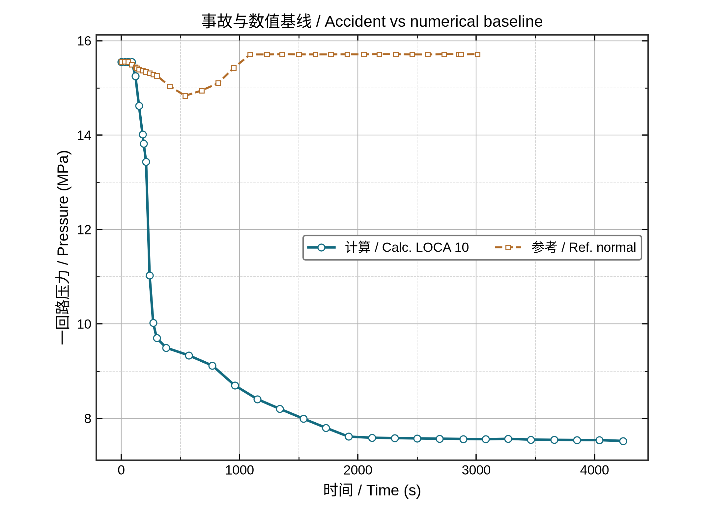
事故与数值基线 / Accident vs numerical baseline
双系列均有点有线；关键极值保留；明确数值参考非实验
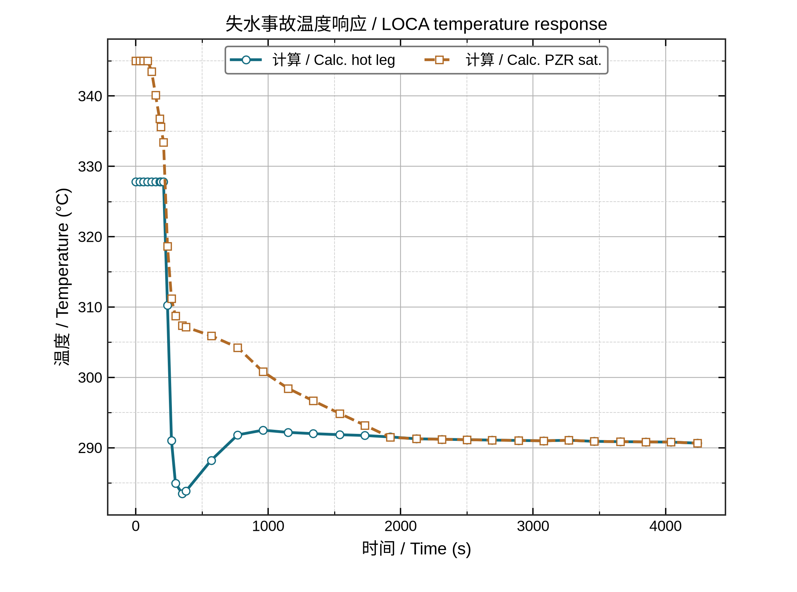
失水事故温度响应 / LOCA temperature response
不同点形＋线型；瞬态取样与精确极值；不伪称解析解
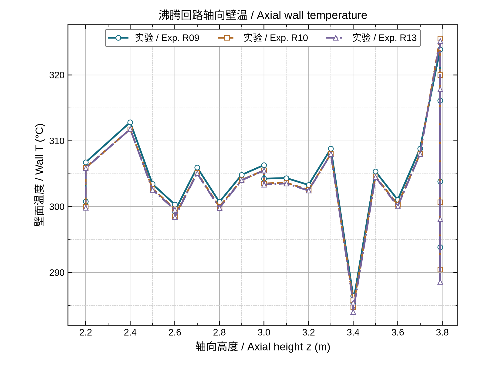
沸腾回路轴向壁温 / Axial wall temperature
原生 point-line；不排序；保留同 z 多传感器；多工况对比
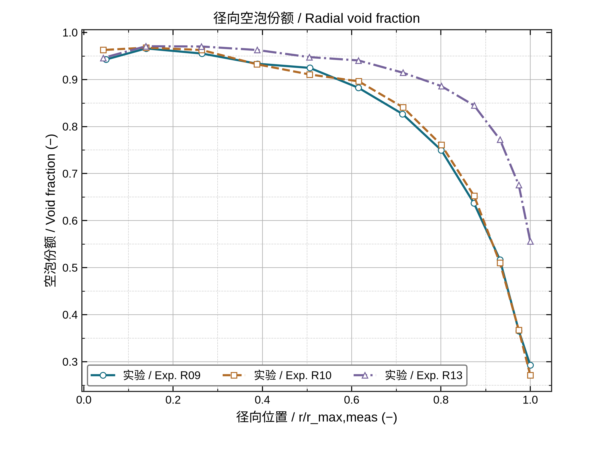
径向空泡份额 / Radial void fraction
径向 point-line；各自原网格；归一化坐标不猜单位
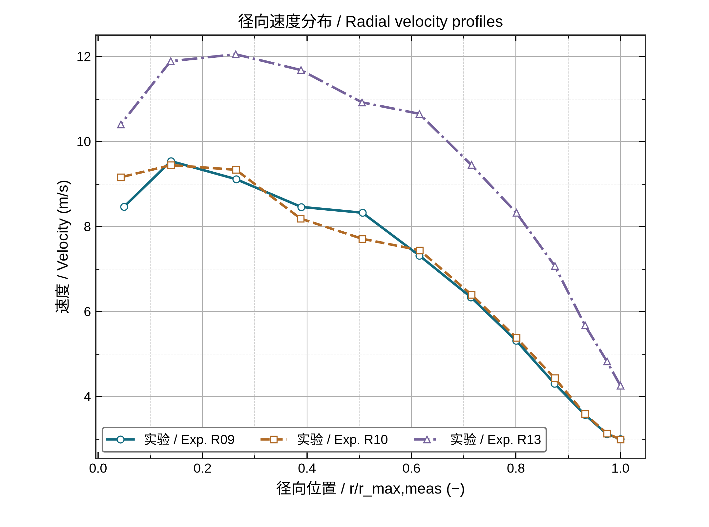
径向速度分布 / Radial velocity profiles
不同点形与虚实线；径向原序；全部测量点
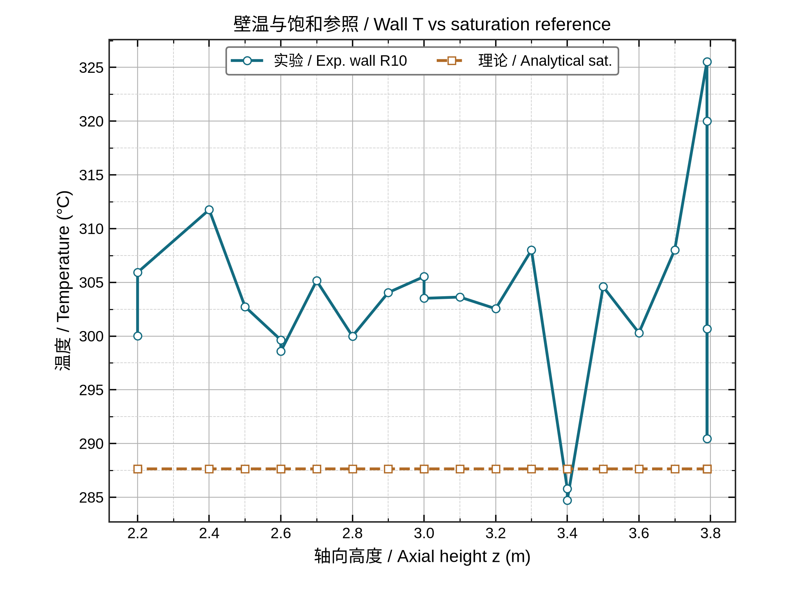
壁温与饱和参照 / Wall T vs saturation reference
实验与理论参照同为点线；明确恒入口压力近似而非壁温预测
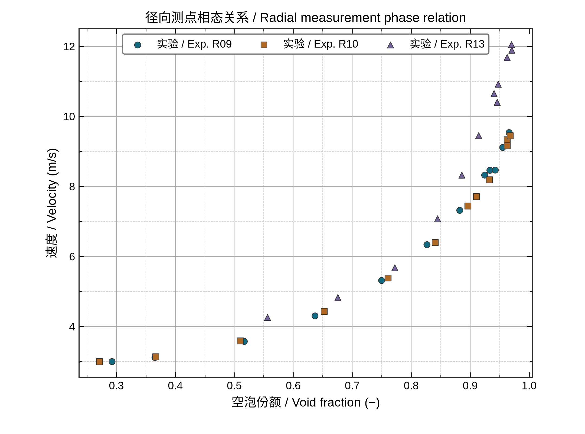
径向测点相态关系 / Radial measurement phase relation
只显示点不连线；多组重叠点形区分；不拟合
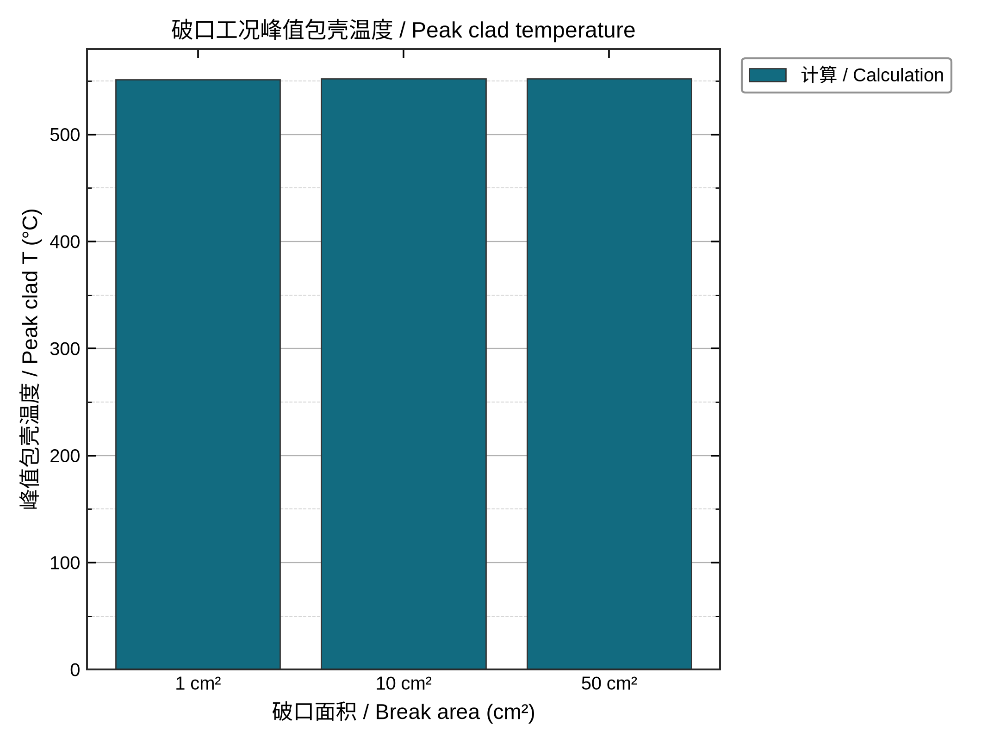
破口工况峰值包壳温度 / Peak clad temperature
预聚合bar；不从抽样数据求峰值；边框与图例
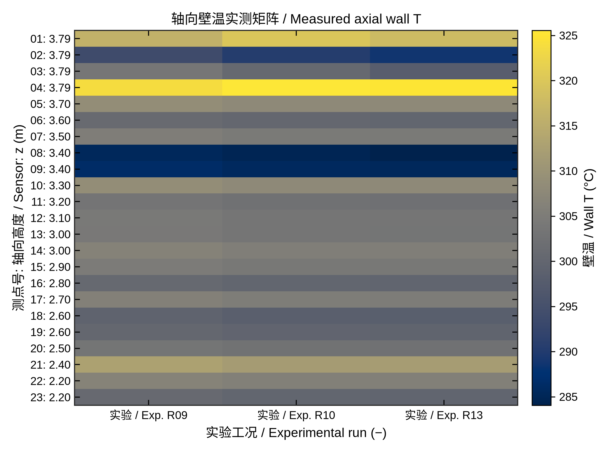
轴向壁温实测矩阵 / Measured axial wall T
原生heatmap；cividis色标；无空间插值；同z传感器分别保留
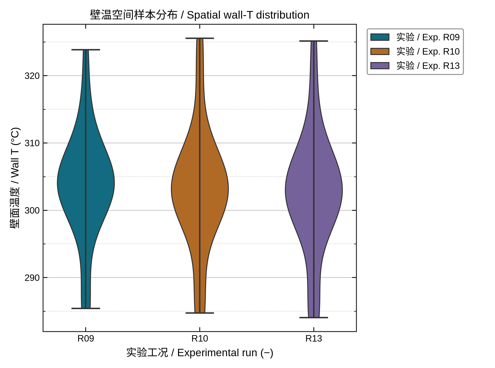
壁温空间样本分布 / Spatial wall-T distribution
原生violin KDE；全部实测值；分类图例；非测量置信区间